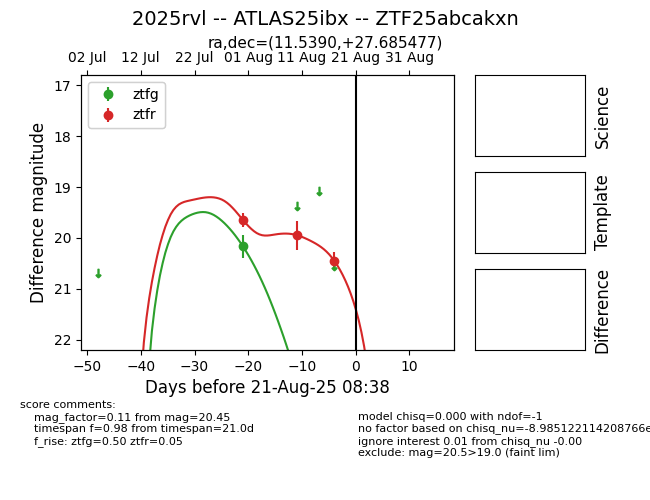

Target 2025rvl at 2025-08-21 08:38, see:
FINK: fink-portal.org/ZTF25abcakxn
Lasair: lasair-ztf.lsst.ac.uk/objects/ZTF25abcakxn
ALeRCE: alerce.online/object/ZTF25abcakxn
TNS: wis-tns.org/object/2025rvl
YSE: ziggy.ucolick.org/yse/transient_detail/2025rvl
alt names
ZTF25abcakxn (ztf,alerce)
2025rvl (tns,yse)
ATLAS25ibx (atlas)
coordinates:
equatorial (ra, dec) = (11.5390,+27.68548)
galactic (l, b) = (121.5015,-35.17160)
photometry
last ztfg=20.16, ztfr=20.45
1 ztfg, 3 ztfr detections
